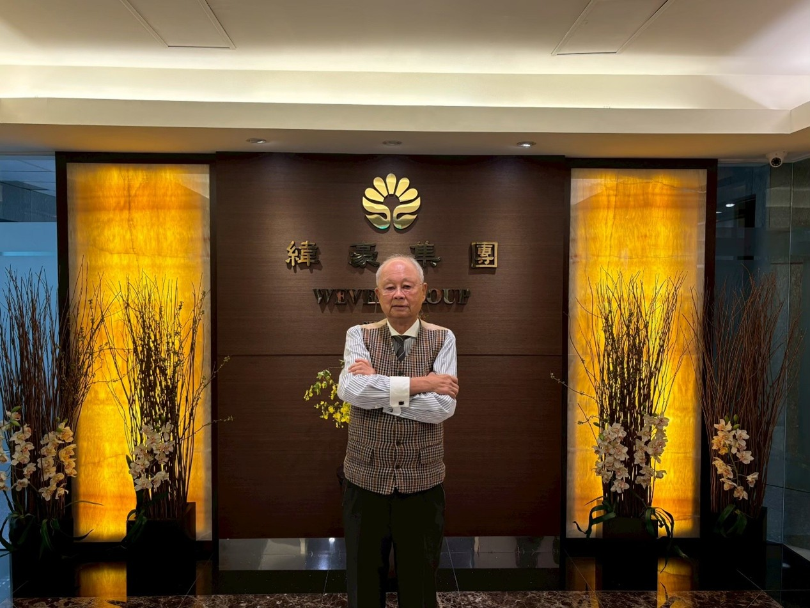
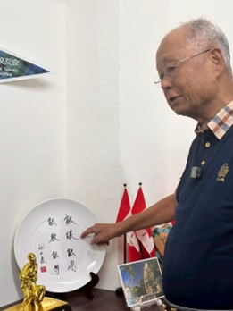
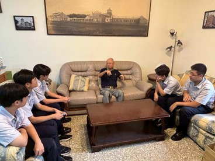
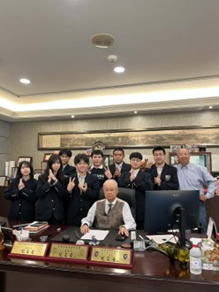

本網站介紹的主角是紀文豪。紀文豪是 紀豪集團總裁.
1974年他白手起家成立公司，從生產金屬、塑膠製品供應國內電子界開始。目前他的緯豪集團是跨國企業，以代工生產水上運動器材，以及寵物配件、極限運動裝備等等，某些產品市占率還是全球之冠。目前他的企業已全球佈局，美國、澳洲都設有投資公司，歐洲各國都有代理商經銷其近千種產品。2003年他更統合所有子公司成立「緯豪集團」，並設立總部於淡水。

紀文豪先生
紀文豪一生在事業上爬滾拼博充滿戲劇性，他出生於大稻程富商家中，小學時家道中落備嘗艱辛，退伍後由底層做起，創業路上起起落落、險阻不斷。一創業就遇上兩次石油危機，他以無比的毅力，藉由創新產品、改變結構、強化硏發來因應局勢。
之後金融危機、泡沫經濟、SARS、新冠肺炎，關關難過關關過。是台灣上個世紀經濟起飛時，台灣中小企業奮鬥史的縮影。也是台商大膽西進的典範企業。
紀文豪飲水思源，不只擔任台灣歷史最久遠的高爾夫俱樂部會長，也是淡江中學校友會理事長。本網頁是淡江中學學生報導他學長傳奇性的人生，藉此記錄台灣社會的轉變以及他對時下年輕人的期待。
這些能力正對應高中生在升學、競賽、社團與人際壓力下，最需要的「韌性、溝通、風險思維」。

紀文豪的座右銘
今年他剛卸下淡江高中校友會理事長的職務，我們在校園內有機會接觸到他，並願意從他身上學到更多。於是我們組成團隊，透過閱讀自傳與訪談的方式，把他的經歷記錄下來，並整理成一條清晰的成長路徑，分成個人生平、家庭、事業成就和思想品質，期待讀者能更有系統地理解他如何在現實壓力下調整步伐、累積能力，並把每一次挫折轉化為再出發的起點。

高二智學生探訪紀文豪
在整個網站與專題的製作過程中，我們從前期的分工、策劃，到後續的採訪、整理與規劃，歷經了非常漫長的過程。雖然每次在進行專題時，要做的事情都十分複雜，但在實際製作當下，大家都能非常有效率地進行網站的佈置與規劃。
每個人在各自分配的工作上都做得非常好。這次關於理事長紀文豪生平的整理，我們主要從他小時候的經商過程以及個人自傳內容切入；後續的採訪重點，則放在補充目前自傳中尚未記載的部分。透過多次訪談，我們不只更完整地拼接出故事脈絡，也在過程中更深入了解紀文豪理事長在各方面的經營理念；無論是他目前所從事的產業，或是在校友會擔任理事長的點滴歷程，我們都在這幾次採訪中，對他有了更深刻的認識。

紀文豪與同學的合照
我們希望透過參與這次的網界博覽會，讓紀文豪理事長的生平能被更多人認識，也邀請你跟著我們一起閱讀與思考——當現實不如預期時，我們能不能像紀文豪一樣，把每一次跌倒，都變成下一次站起來的起點。